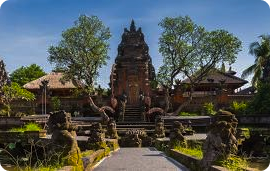
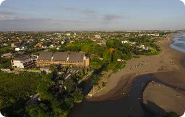
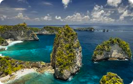
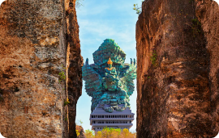

Tentang Bali
Bali, pulau eksotis di Indonesia,
mempesona para wisatawan dengan pantai pasir
putihnya yang indah, budaya yang kaya,
dan pemandangan alam yang memukau.
Dikenal sebagai "Pulau Dewata,"
Bali menggabungkan pesona tradisional
dan kemewahan modern dalam harmoni yang unik.
Bagi mereka yang mencari petualangan, ketenangan,
atau pengalaman budaya yang mendalam, Bali adalah
destinasi yang sempurna.
Tempat Populer
Beberapa tempat yang wajib kalian kunjungi
ketika berada di bali

Ubud
Kota Ubud, terletak di bagian tengah pulau Bali,
Indonesia, dikenal sebagai pusat tarian,
kerajinan tradisional, dan Hutan hujan
Selengkapnya

Canggu
Canggu adalah desa di kecamatan Kuta Utara,
Kabupaten Badung, Bali, Indonesia. Canggu
mulai terkenal setelah dibukanya
Deus ex Machina.
Selengkapnya

Nusa Penida
Nusa Penida adalah sebuah pulau bagian dari
negara Republik Indonesia yang terletak di
sebelah tenggara Bali yang dipisahkan oleh
Selat Badung.
Selengkapnya

Garuda Wisnu Kencana
Saksikan berbagai keindahan tarian Bali seperti tarian Kecak yang eksotis, tarian Legong yang megah, serta banyak tarian lainnya yang memukau ditampilkan di sini.
Selengkapnya